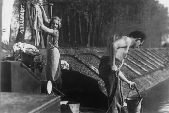

Responder a este comentário
L'Atalante
por Jorge Furtado em 05 de outubro de 2008Acabo de ver uma obra-prima, "L'Atalante", de Jean Vigo. O filme aparece em quase todas as listas de grandes clássicos da história do cinema e só hoje entendi o motivo, nunca tinha visto.
"Atalante" é o nome de uma barcaça que navega pelos rios da França e cruza os canais de Paris. A bordo vão Jean, o patrão (Jean Dasté) e Juliette, a patroa (Dita Parlo), mais o Velho Jules (Michel Simon) e o Grumete (Louis Lefebvre). Jean e Juliette são recém casados, ela sonha conhecer Paris, para onde estão indo.
Jean, o dono da barcaça, é um jovem impetuoso, galante, corajoso, bom e simples, como deve ser um herói romântico. Juliette, a mocinha, é linda, ingênua e sonhadora, como devem ser as mocinhas. Mas é também uma mulher forte e independente, por onde começa a escapar do clichê. Já o Velho Jules é um personagem espetacular, entrou para a minha lista de (agora) 216 arquétipos:
JULES, VELHO. (de "L'Atalante", de Jean Vigo, roteiro de Vigo e Albert Riéra sobre original de Jean Guinée). Velho criado excêntrico, fascinante e um tanto maluco, cheio de histórias para contar, não muito secretamente apaixonado pela patroa. O mordomo Max von Mayerling interpretado por Erich von Stroheim em Crepúsculo dos Deuses. Santiago, de João Moreira Salles.
No caminho da Atalante, que cruza Paris, surgem outros ótimos personagens, mas o filme não é apenas uma seqüência de tipos estranhos. A história é ótima, clara inspiração do roteiro de Federico Fellini e Michelangelo Antonioni para "O Sheik Branco". Acompanhamos os primeiros dias de um casamento, um homem que luta para se livrar dos hábitos de solteiro e uma mulher que se despede das ilusões de menina. Juliette descobre que Paris não é um sonho, Jean descobre que não pode viver sem Juliette e o fim eu não conto, vá ver o filme.
Como todo grande clássico, o filme de Vigo não aceita rótulos, é uma mistura de crônica, exercício surrealista, painel de tipos populares, comédia romântica e drama social. L'Atalante é, acima de tudo, poesia em forma de cinema. Cada plano é rigorosamente composto, cada seqüência é brilhantemente encenada e fotografada, e tudo a serviço de uma dramaturgia poderosa, inventiva, profundamente humana, feita de grandes personagens, com desejos e medos universais e eternos.
Jean Vigo (26.05.1905 – 05.10.1934) nasceu em Paris. Era filho dos militantes anarquistas Emily Cléro e Eugeni Bonaventura de Vigo i Sallés (1883-1917), que adotou o nome de Miguel Almereyda (uma anagrama de "y'a la merde", "lá está a merda"). Miguel Almereyda era jornalista, editou o semanário "La Guerre Sociale" (1906-1913) e o diário socialista "Le Bonnet Rouge" (1913-1917), onde defendia sua posição contra a guerra. Foi preso, acusado de receber dinheiro da Alemanha, e encontrado morto em sua cela, estrangulado com seus próprios cordões de sapato, possivelmente a mando do governo francês.
Jean Vigo tinha 12 anos quando o pai morreu e teve que assumir uma falsa identidade (Jean Sales) para evitar perseguições na escola. Com a saúde muito frágil, viveu interno em vários colégios até os 23 anos, quando descobriu o cinema. Seus primeiros curtas: "A Propósito de Nice" (1930) e "Taris ou a natação" (1931) são documentários inventivos, bastante influenciados pelo surrealismo. Seu filme seguinte, um média metragem chamado "Zero em comportamento" (1933), baseado em memórias escolares, já revelava seu extraordinário talento e ficou muitos anos proibido. Os três filmes são interessantes, "Zéro de conduite" tem momentos brilhantes, mas é "L'Atalante" (1934) que coloca Jean Vigo entre os grandes artistas do século 20.
Vigo estava doente, com graves problemas respiratórios, quando filmou L'Atalante, durante um inverno rigoroso. Morreu em 1934, antes mesmo do filme ser finalizado e distribuído, cheio de cortes e acréscimos feitos pelos produtores.
"Jean Vigo Integral", os dois dvds lançados pela Versátil em parceria com a editora Cosac Naif - que editou dois estudos do Paulo Emílio Sales Gomes sobre Vigo – traz os quatro filmes em cópias restauradas pela Cinemateca Francesa, uma rara oportunidade de apreciar com nitidez o trabalho de um jovem mestre.
Nos extras, uma excelente entrevista com François Truffaut sobre Vigo feita por Eric Rohmer, além de ótimos depoimentos de Antonio Cândido, Ismail Xavier, Carlos Augusto Calil e Lygia Fagundes Telles, (sobre Vigo e sobre Paulo Emilio).
Sobre Jean Vigo.
Sobre "L'Atalante".
Sobre Miguel Almereyda.
